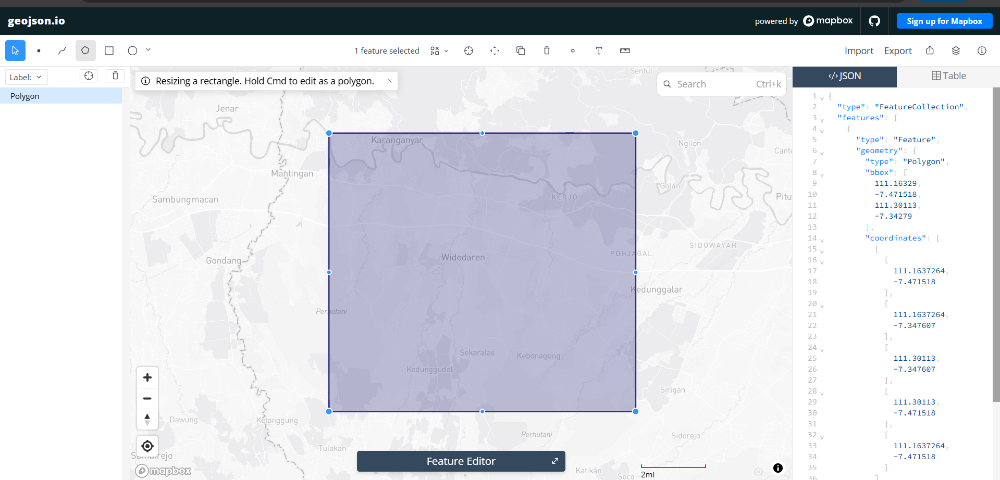

Kolekting Data: Kualitas Polusi Udara di Kecamatan Widodaren, Ngawi#
Latar Belakang#
Udara bersih adalah kebutuhan dasar yang menopang keberlangsungan hidup manusia dan seluruh makhluk hidup di bumi. Sayangnya, laju pertumbuhan ekonomi dan pembangunan wilayah yang terus meningkat justru membawa konsekuensi serius berupa memburuknya kualitas udara di berbagai daerah.
Kecamatan Widodaren yang berada di Kabupaten Ngawi merupakan salah satu wilayah dengan peran penting dalam aktivitas industri dan perekonomian lokal, terutama karena keberadaan pabrik semen berskala besar beserta rangkaian aktivitas tambang dan sektor pendukungnya.
Tidak hanya dari sektor industri, lalu lintas kendaraan logistik dan berbagai kegiatan masyarakat sehari-hari di Kecamatan Widodaren juga turut menambah beban emisi ke udara. Asap dari cerobong pabrik, debu hasil aktivitas industri, hingga gas buang kendaraan bermotor bersama-sama melepaskan sejumlah polutan berbahaya, di antaranya Particulate Matter (\(PM_{2.5}\) dan \(PM_{10}\)), Karbon Monoksida (\(CO\)), Nitrogen Dioksida (\(NO_2\)), Sulfur Dioksida (\(SO_2\)), dan Ozon (\(O_3\)).
Memanfaatkan data citra satelit Copernicus Sentinel-5P, kajian ini berupaya memantau pergerakan konsentrasi empat jenis gas polutan utama yang paling berpengaruh terhadap kesehatan lingkungan di Kecamatan Widodaren, yakni:
Nitrogen Dioksida (\(NO_2\))
Karbon Monoksida (\(CO\))
Belerang Dioksida (\(SO_2\))
Ozon (\(O_3\))
Berdasarkan latar belakang tersebut, kajian ini dilakukan melalui proses pengumpulan data (crawling) historis kualitas udara secara khusus untuk wilayah Kecamatan Widodaren, Kabupaten Ngawi, dengan cakupan waktu satu tahun terakhir hingga 31 Agustus 2026.
Business Understanding#
1. Tujuan#
Kajian ini disusun dengan tujuan mengukur dan memetakan kondisi serta kecenderungan kualitas udara di Kabupaten Ngawi secara objektif dan berbasis data. Fokus analisis diarahkan pada pengolahan data historis empat parameter polusi udara dari satelit Copernicus Sentinel-5P, yaitu \(CO\), \(NO_2\), \(SO_2\), dan \(O_3\), dalam rentang satu tahun terakhir hingga 31 Agustus 2026.
Dengan bantuan teknik crawling data serta visualisasi time series, kajian ini diarahkan untuk mengenali pola perubahan tingkat polusi sekaligus menemukan periode-periode ketika kualitas udara di Ngawi mengalami penurunan yang cukup mencolok.
2. Manfaat#
Kajian kualitas udara ini diharapkan memberikan sejumlah manfaat, di antaranya:
a. Menyediakan informasi kondisi udara harian Ngawi secara transparan dan mudah diakses masyarakat, sehingga dapat menjadi dasar pengambilan langkah antisipatif seperti penggunaan masker atau pembatasan aktivitas luar ruangan saat indeks polusi tinggi.
b. Menjadi bahan pertimbangan dan referensi empiris bagi pemerintah dalam mengevaluasi kebijakan pengendalian emisi, baik yang bersumber dari sektor industri berat, pertambangan, maupun transportasi darat di Kabupaten Ngawi.
c. Memenuhi capaian pembelajaran pada mata kuliah Proyek Sains Data.
Data Understanding#
Tahap Data Understanding bertujuan untuk mengenali, mengeksplorasi, dan memahami karakteristik data yang telah dikumpulkan sebelum ke tahap analisis.
1. Sumber Data dan Batasan Wilayah#
Data historis kualitas udara diambil melalui API penyedia data lingkungan dan cuaca global yang valid. Pada data yang diambil terdapat parameter/fitur polutan seperti \(PM_{2.5}\), \(PM_{10}\), \(CO\), \(NO_2\), \(SO_2\), dan \(O_3\). Tetapi untuk parameter \(PM_{2.5}\) dan \(PM_{10}\) tidak dapat diukur secara langsung oleh satelit observasi kolom atmosfer murni (seperti Sentinel-5P)
Untuk memastikan spesifik titik pengambilan data hanya mencakup wilayah Kabupaten Tuban maka titik koordinat diambil menggunakan GeoJson. Rentang waktu data yang ditarik mencakup catatan historis selama satu tahun ke belakang hingga batas akhir tanggal 31 Agustus 2026.
Batasan Wilayah#
Untuk batasan wilayah yang diambil adalah seperti gambar di bawah ini. Titik koordinat wilayah yang diambil nantinya digunakan untuk crawling data. Setelah mendapatkan titik koordinat sesuai wilayah langkah selanjutnya mengambil data.

Pengambilan Data#
Dokumentasi pengambilan data: https://documentation.dataspace.copernicus.eu/notebook-samples/openeo/NO2Covid.html
Note: Buat akun di website copernicus, lalu access JupyterLab dan pilih Python 3 (ipykernel)
1. Install Library#
pip install openeo
Requirement already satisfied: openeo in c:\users\acer\appdata\local\programs\python\python312\lib\site-packages (0.51.0)
Requirement already satisfied: requests>=2.26.0 in c:\users\acer\appdata\local\programs\python\python312\lib\site-packages (from openeo) (2.32.3)
Requirement already satisfied: urllib3>=1.9.0 in c:\users\acer\appdata\local\programs\python\python312\lib\site-packages (from openeo) (2.3.0)
Requirement already satisfied: shapely>=1.6.4 in c:\users\acer\appdata\local\programs\python\python312\lib\site-packages (from openeo) (2.1.2)
Requirement already satisfied: numpy>=1.17.0 in c:\users\acer\appdata\local\programs\python\python312\lib\site-packages (from openeo) (2.2.0)
Requirement already satisfied: xarray<2025.01.2,>=0.12.3 in c:\users\acer\appdata\local\programs\python\python312\lib\site-packages (from openeo) (2025.1.1)
Requirement already satisfied: pandas<3.0.0,>0.20.0 in c:\users\acer\appdata\local\programs\python\python312\lib\site-packages (from openeo) (2.3.3)
Requirement already satisfied: pystac>=1.5.0 in c:\users\acer\appdata\local\programs\python\python312\lib\site-packages (from openeo) (1.15.2)
Requirement already satisfied: deprecated>=1.2.12 in c:\users\acer\appdata\local\programs\python\python312\lib\site-packages (from openeo) (1.3.1)
Requirement already satisfied: oschmod>=0.3.12 in c:\users\acer\appdata\local\programs\python\python312\lib\site-packages (from openeo) (0.3.12)
Requirement already satisfied: geopandas>=0.14 in c:\users\acer\appdata\local\programs\python\python312\lib\site-packages (from openeo) (1.1.4)
Requirement already satisfied: wrapt<3,>=1.10 in c:\users\acer\appdata\local\programs\python\python312\lib\site-packages (from deprecated>=1.2.12->openeo) (2.4.0)
Requirement already satisfied: pyogrio>=0.7.2 in c:\users\acer\appdata\local\programs\python\python312\lib\site-packages (from geopandas>=0.14->openeo) (0.13.0)
Requirement already satisfied: packaging in c:\users\acer\appdata\roaming\python\python312\site-packages (from geopandas>=0.14->openeo) (24.1)
Requirement already satisfied: pyproj>=3.5.0 in c:\users\acer\appdata\local\programs\python\python312\lib\site-packages (from geopandas>=0.14->openeo) (3.7.2)
Requirement already satisfied: pywin32 in c:\users\acer\appdata\roaming\python\python312\site-packages (from oschmod>=0.3.12->openeo) (306)
Requirement already satisfied: python-dateutil>=2.8.2 in c:\users\acer\appdata\roaming\python\python312\site-packages (from pandas<3.0.0,>0.20.0->openeo) (2.9.0.post0)
Requirement already satisfied: pytz>=2020.1 in c:\users\acer\appdata\local\programs\python\python312\lib\site-packages (from pandas<3.0.0,>0.20.0->openeo) (2026.3.post1)
Requirement already satisfied: tzdata>=2022.7 in c:\users\acer\appdata\local\programs\python\python312\lib\site-packages (from pandas<3.0.0,>0.20.0->openeo) (2026.2)
Requirement already satisfied: pystac-core<2,>=1.15.0 in c:\users\acer\appdata\local\programs\python\python312\lib\site-packages (from pystac>=1.5.0->openeo) (1.15.2)
Requirement already satisfied: pystac-ext-classification in c:\users\acer\appdata\local\programs\python\python312\lib\site-packages (from pystac>=1.5.0->openeo) (2.0.1)
Requirement already satisfied: pystac-ext-datacube in c:\users\acer\appdata\local\programs\python\python312\lib\site-packages (from pystac>=1.5.0->openeo) (2.2.1)
Requirement already satisfied: pystac-ext-eo in c:\users\acer\appdata\local\programs\python\python312\lib\site-packages (from pystac>=1.5.0->openeo) (1.1.1)
Requirement already satisfied: pystac-ext-file in c:\users\acer\appdata\local\programs\python\python312\lib\site-packages (from pystac>=1.5.0->openeo) (2.1.1)
Requirement already satisfied: pystac-ext-grid in c:\users\acer\appdata\local\programs\python\python312\lib\site-packages (from pystac>=1.5.0->openeo) (1.1.1)
Requirement already satisfied: pystac-ext-item-assets in c:\users\acer\appdata\local\programs\python\python312\lib\site-packages (from pystac>=1.5.0->openeo) (1.0.1)
Requirement already satisfied: pystac-ext-label in c:\users\acer\appdata\local\programs\python\python312\lib\site-packages (from pystac>=1.5.0->openeo) (1.0.2)
Requirement already satisfied: pystac-ext-mgrs in c:\users\acer\appdata\local\programs\python\python312\lib\site-packages (from pystac>=1.5.0->openeo) (1.0.1)
Requirement already satisfied: pystac-ext-mlm in c:\users\acer\appdata\local\programs\python\python312\lib\site-packages (from pystac>=1.5.0->openeo) (1.4.1)
Requirement already satisfied: pystac-ext-pointcloud in c:\users\acer\appdata\local\programs\python\python312\lib\site-packages (from pystac>=1.5.0->openeo) (1.0.1)
Requirement already satisfied: pystac-ext-projection in c:\users\acer\appdata\local\programs\python\python312\lib\site-packages (from pystac>=1.5.0->openeo) (2.0.1)
Requirement already satisfied: pystac-ext-raster in c:\users\acer\appdata\local\programs\python\python312\lib\site-packages (from pystac>=1.5.0->openeo) (1.1.1)
Requirement already satisfied: pystac-ext-render in c:\users\acer\appdata\local\programs\python\python312\lib\site-packages (from pystac>=1.5.0->openeo) (2.0.0)
Requirement already satisfied: pystac-ext-sar in c:\users\acer\appdata\local\programs\python\python312\lib\site-packages (from pystac>=1.5.0->openeo) (1.0.1)
Requirement already satisfied: pystac-ext-sat in c:\users\acer\appdata\local\programs\python\python312\lib\site-packages (from pystac>=1.5.0->openeo) (1.0.1)
Requirement already satisfied: pystac-ext-scientific in c:\users\acer\appdata\local\programs\python\python312\lib\site-packages (from pystac>=1.5.0->openeo) (1.0.1)
Requirement already satisfied: pystac-ext-storage in c:\users\acer\appdata\local\programs\python\python312\lib\site-packages (from pystac>=1.5.0->openeo) (2.0.1)
Requirement already satisfied: pystac-ext-table in c:\users\acer\appdata\local\programs\python\python312\lib\site-packages (from pystac>=1.5.0->openeo) (1.2.1)
Requirement already satisfied: pystac-ext-timestamps in c:\users\acer\appdata\local\programs\python\python312\lib\site-packages (from pystac>=1.5.0->openeo) (1.1.1)
Requirement already satisfied: pystac-ext-version in c:\users\acer\appdata\local\programs\python\python312\lib\site-packages (from pystac>=1.5.0->openeo) (1.2.1)
Requirement already satisfied: pystac-ext-view in c:\users\acer\appdata\local\programs\python\python312\lib\site-packages (from pystac>=1.5.0->openeo) (1.0.1)
Requirement already satisfied: pystac-ext-xarray-assets in c:\users\acer\appdata\local\programs\python\python312\lib\site-packages (from pystac>=1.5.0->openeo) (1.0.1)
Requirement already satisfied: charset-normalizer<4,>=2 in c:\users\acer\appdata\local\programs\python\python312\lib\site-packages (from requests>=2.26.0->openeo) (3.4.1)
Requirement already satisfied: idna<4,>=2.5 in c:\users\acer\appdata\local\programs\python\python312\lib\site-packages (from requests>=2.26.0->openeo) (3.10)
Requirement already satisfied: certifi>=2017.4.17 in c:\users\acer\appdata\local\programs\python\python312\lib\site-packages (from requests>=2.26.0->openeo) (2024.12.14)
Requirement already satisfied: six>=1.5 in c:\users\acer\appdata\roaming\python\python312\site-packages (from python-dateutil>=2.8.2->pandas<3.0.0,>0.20.0->openeo) (1.16.0)
Note: you may need to restart the kernel to use updated packages.
[notice] A new release of pip is available: 24.2 -> 26.2.1
[notice] To update, run: C:\Users\ACER\AppData\Local\Programs\Python\Python312\python.exe -m pip install --upgrade pip
2. Import Library#
Setelah proses instalasi selesai, kita memuat (import) library openeo ke dalam environment Python agar siap digunakan.
import openeo
3. Autentikasi dan Koneksi ke Copernicus Data Space#
Lakukan koneksi dan autentikasi ke server openeo.dataspace.copernicus.eu menggunakan sistem OIDC (OpenID Connect). Ikuti tautan yang muncul dan masukkan kode untuk menyelesaikan proses autentikasi.
connection = openeo.connect("openeo.dataspace.copernicus.eu").authenticate_oidc()
Authenticated using refresh token.
4. Koordinat Wilayah dan Pengambilan Data setiap Fitur#
Koordinat area kecamatan widodaren Ngawi diperoleh dari https://geojson.io dengan Fitur yaitu \(CO\), \(NO2\), \(SO2\), dan \(O3\). Setiap fitur diproses supaya didapatkan data berupa .csv, lalu digabungkan masing masing fitur menjadi 1 file .csv.
1. CO#
aoi = {
"type": "Polygon",
"coordinates": [
[
[111.1637264, -7.471518],
[111.1637264, -7.347607],
[111.30113, -7.347607],
[111.30113, -7.471518],
[111.1637264, -7.471518],
]
]
}
s5post = connection.load_collection(
"SENTINEL_5P_L2",
temporal_extent=["2025-08-31", "2026-08-31"],
spatial_extent={
"west": 111.1637264,
"south": -7.471518,
"east": 111.30113,
"north": -7.347607
},
bands=["CO"],
)
s5p_co_daily = s5post.aggregate_temporal_period(reducer="mean", period="day")
s5p_co_aoi = s5p_co_daily.aggregate_spatial(reducer="mean", geometries=aoi)
job = s5p_co_aoi.execute_batch(title="Polutan CO in Widodaren", outputfile="COInWidodaren.csv")
0:00:00 Job 'j-2609131829394beb8c944f9ee6656718': send 'start'
0:00:03 Job 'j-2609131829394beb8c944f9ee6656718': queued (progress 0%)
0:00:08 Job 'j-2609131829394beb8c944f9ee6656718': queued (progress 0%)
0:00:15 Job 'j-2609131829394beb8c944f9ee6656718': queued (progress 0%)
0:00:23 Job 'j-2609131829394beb8c944f9ee6656718': queued (progress 0%)
2. NO2#
aoi = {
"type": "Polygon",
"coordinates": [
[
[111.1637264, -7.471518],
[111.1637264, -7.347607],
[111.30113, -7.347607],
[111.30113, -7.471518],
[111.1637264, -7.471518],
]
]
}
s5post = connection.load_collection(
"SENTINEL_5P_L2",
temporal_extent=["2025-08-31", "2026-08-31"],
spatial_extent={
"west": 111.1637264,
"south": -7.471518,
"east": 111.30113,
"north": -7.347607
},
bands=["NO2"],
)
s5p_no2_daily = s5post.aggregate_temporal_period(reducer="mean", period="day")
s5p_no2_aoi = s5p_no2_daily.aggregate_spatial(reducer="mean", geometries=aoi)
job = s5p_no2_aoi.execute_batch(title="Polutan NO2 in Widodaren", outputfile="NO2InWidodaren.csv")
0:00:00 Job 'j-26091307433648ceb28c2037a34b462e': send 'start'
0:00:03 Job 'j-26091307433648ceb28c2037a34b462e': created (progress 0%)
0:00:08 Job 'j-26091307433648ceb28c2037a34b462e': queued (progress 0%)
0:00:15 Job 'j-26091307433648ceb28c2037a34b462e': queued (progress 0%)
0:00:23 Job 'j-26091307433648ceb28c2037a34b462e': queued (progress 0%)
0:00:33 Job 'j-26091307433648ceb28c2037a34b462e': queued (progress 0%)
0:00:46 Job 'j-26091307433648ceb28c2037a34b462e': running (progress N/A)
0:01:01 Job 'j-26091307433648ceb28c2037a34b462e': running (progress N/A)
0:01:21 Job 'j-26091307433648ceb28c2037a34b462e': running (progress N/A)
0:01:45 Job 'j-26091307433648ceb28c2037a34b462e': running (progress N/A)
0:02:15 Job 'j-26091307433648ceb28c2037a34b462e': running (progress N/A)
0:02:53 Job 'j-26091307433648ceb28c2037a34b462e': running (progress N/A)
0:03:40 Job 'j-26091307433648ceb28c2037a34b462e': running (progress N/A)
0:04:39 Job 'j-26091307433648ceb28c2037a34b462e': finished (progress 100%)
3. SO2#
aoi = {
"type": "Polygon",
"coordinates": [
[
[111.1637264, -7.471518],
[111.1637264, -7.347607],
[111.30113, -7.347607],
[111.30113, -7.471518],
[111.1637264, -7.471518],
]
]
}
s5post = connection.load_collection(
"SENTINEL_5P_L2",
temporal_extent=["2025-08-31", "2026-08-31"],
spatial_extent={
"west": 111.1637264,
"south": -7.471518,
"east": 111.30113,
"north": -7.347607
},
bands=["SO2"],
)
s5p_so2_daily = s5post.aggregate_temporal_period(reducer="mean", period="day")
s5p_so2_aoi = s5p_so2_daily.aggregate_spatial(reducer="mean", geometries=aoi)
job = s5p_so2_aoi.execute_batch(title="Polutan SO2 in Widodaren", outputfile="SO2InWidodaren.csv")
0:00:00 Job 'j-26091307504343039859f04a6be50a33': send 'start'
0:00:03 Job 'j-26091307504343039859f04a6be50a33': created (progress 0%)
0:00:08 Job 'j-26091307504343039859f04a6be50a33': queued (progress 0%)
0:00:15 Job 'j-26091307504343039859f04a6be50a33': queued (progress 0%)
0:00:23 Job 'j-26091307504343039859f04a6be50a33': queued (progress 0%)
0:00:33 Job 'j-26091307504343039859f04a6be50a33': queued (progress 0%)
0:00:46 Job 'j-26091307504343039859f04a6be50a33': running (progress N/A)
0:01:01 Job 'j-26091307504343039859f04a6be50a33': running (progress N/A)
0:01:21 Job 'j-26091307504343039859f04a6be50a33': running (progress N/A)
0:01:45 Job 'j-26091307504343039859f04a6be50a33': running (progress N/A)
0:02:15 Job 'j-26091307504343039859f04a6be50a33': running (progress N/A)
0:02:53 Job 'j-26091307504343039859f04a6be50a33': running (progress N/A)
0:03:40 Job 'j-26091307504343039859f04a6be50a33': running (progress N/A)
0:04:39 Job 'j-26091307504343039859f04a6be50a33': finished (progress 100%)
4. O3#
aoi = {
"type": "Polygon",
"coordinates": [
[
[111.1637264, -7.471518],
[111.1637264, -7.347607],
[111.30113, -7.347607],
[111.30113, -7.471518],
[111.1637264, -7.471518],
]
]
}
s5post = connection.load_collection(
"SENTINEL_5P_L2",
temporal_extent=["2025-08-31", "2026-08-31"],
spatial_extent={
"west": 111.1637264,
"south": -7.471518,
"east": 111.30113,
"north": -7.347607
},
bands=["O3"],
)
s5p_o3_daily = s5post.aggregate_temporal_period(reducer="mean", period="day")
s5p_o3_aoi = s5p_o3_daily.aggregate_spatial(reducer="mean", geometries=aoi)
job = s5p_o3_aoi.execute_batch(title="Polutan O3 in Widodaren", outputfile="O3InWidodaren.csv")
0:00:00 Job 'j-260913080141420081cbf1852e1d429c': send 'start'
0:00:03 Job 'j-260913080141420081cbf1852e1d429c': created (progress 0%)
0:00:08 Job 'j-260913080141420081cbf1852e1d429c': queued (progress 0%)
0:00:15 Job 'j-260913080141420081cbf1852e1d429c': queued (progress 0%)
0:00:23 Job 'j-260913080141420081cbf1852e1d429c': queued (progress 0%)
0:00:33 Job 'j-260913080141420081cbf1852e1d429c': running (progress N/A)
0:00:47 Job 'j-260913080141420081cbf1852e1d429c': running (progress N/A)
0:01:02 Job 'j-260913080141420081cbf1852e1d429c': running (progress N/A)
0:01:22 Job 'j-260913080141420081cbf1852e1d429c': running (progress N/A)
0:01:46 Job 'j-260913080141420081cbf1852e1d429c': running (progress N/A)
0:02:17 Job 'j-260913080141420081cbf1852e1d429c': running (progress N/A)
0:02:54 Job 'j-260913080141420081cbf1852e1d429c': running (progress N/A)
0:03:42 Job 'j-260913080141420081cbf1852e1d429c': finished (progress 100%)
2. Deskripsi Fitur#
Berdasarkan file .csv hasil crawling data kualitas udara yang ada di Kabupaten Ngawi yang telah dibatasi menggunakan GeoJson, terdapat kolom parameter/fitur yang menunjukkan polutan serta parameter waktu. Berikut merupakan deskripsi setiap parameter/fitur yang terdapat di wilayah Kabupaten Ngawi:
a. Karbon Monoksida (CO)#
Karbon Monoksida (CO) adalah gas beracun yang tidak berwarna, tidak berbau, tidak berasa. Gas ini terbentuk akibat proses pembakaran karbon atau bahan bakar yang tidak sempurna, selain itu juga akibat dari emisi gas buang dari kendaraan bermotor yang padat di jalan raya, kemacetan lalu lintas, serta proses pembakaran dari fasilitas industri atau genset. Dalam konsentrasi tinggi, CO dapat mengikat oksigen dalam darah secara berlebihan sehingga membahayakan kesehatan manusia.
b. Nitrogen Dioksida (NO2)#
Nitrogen Dioksida (NO2) adalah gas beracun berwarna coklat kemerahan dengan bau yang tajam dan menyengat. Gas ini berkontribusi besar terhadap penurunan kualitas udara perkotaan dan pembentukan kabut asap (smog) serta hujan asam.
c. Sulfur Dioksida (SO2)#
Sulfur Dioksida (SO2) adalah gas berbau tajam dan menyesakkan yang dilepaskan ketika material atau bahan bakar yang mengandung sulfur dibakar. Gas ini dapat memicu gangguan pernapasan, terutama bagi penderita asma. Proses pembakaran bahan bakar fosil yang mengandung sulfur (seperti batu bara atau minyak industri) serta aktivitas dari sektor industri berat dan peleburan.
d. Ozone (O3)#
Ozone (O3) terbentuk melalui reaksi kimia atmosfer antara polutan pendahulu (seperti \(NO_2\) dan senyawa organik volatil) yang bereaksi di bawah paparan sinar matahari terik, yang kerap ditemui di wilayah terbuka atau kawasan industri dan perkotaan.
3. Eksplorasi Data#
Tahap eksplorasi data digunakan untuk menggali mengenai informasi awal, memahami karakteristik data, dan memastikan file .csv hasil crawling data polusi udara di Kabupaten Ngawi.
a. Pemeriksaan Struktur dan Tipe Data#
File .csv hasil crawling akan dilakukan pengecekan jumlah baris dan kolom pada tiap polutannya untuk memastikan rentang waktu data dari satu tahun ke belakang hingga tanggal 31 Agustus 2026 telah terhimpun secara utuh.
import pandas as pd
# Membaca data
df = pd.read_csv("KualitasUdaraWidodaren.csv")
df['date'] = pd.to_datetime(df['date'])
print("=== INFORMASI STRUKTUR & TIPE DATA KOLOM ===")
df.info()
=== INFORMASI STRUKTUR & TIPE DATA KOLOM ===
<class 'pandas.core.frame.DataFrame'>
RangeIndex: 366 entries, 0 to 365
Data columns (total 5 columns):
# Column Non-Null Count Dtype
--- ------ -------------- -----
0 date 366 non-null datetime64[ns, UTC]
1 CO 279 non-null float64
2 NO2 246 non-null float64
3 SO2 281 non-null float64
4 O3 361 non-null float64
dtypes: datetime64[ns, UTC](1), float64(4)
memory usage: 14.4 KB
b. Analisis Statistik Deskriptif#
Pada analisis deskriptif ini terdapat informasi mengenai data dalam setiap fitur, yaitu:
count: Jumlah total catatan data yang valid dan tidak kosong untuk masing-masing parameter gas polutan
mean: Menjelaskan tingkat konsentrasi rata-rata harian dari gas polutan (\(CO\), \(NO_2\), \(SO_2\), \(O_3\)) di wilayah Kabupaten Tuban selama rentang waktu satu tahun hingga 31 Agustus 2026
std: Menunjukkan tingkat penyebaran atau fluktuasi data dari nilai rata-ratanya. Semakin besar nilai std, berarti konsentrasi polutan tersebut sangat fluktuatif (kadang sangat rendah, kadang tiba-tiba tinggi)
min&max: Menunjukkan titik terendah pencatatan dan titik lonjakan tertinggi (puncak polusi)
median: Merupakan nilai tengah yang mencerminkan kondisi kualitas udara di Kabupaten Tuban sehari-hari.
import pandas as pd
df = pd.read_csv("KualitasUdaraWidodaren.csv")
stat_desc = df.describe().T
stat_desc['median'] = df.median(numeric_only=True)
stat_desc = stat_desc[['count', 'mean', 'std', 'min', '50%', 'max']]
stat_desc = stat_desc.rename(columns={'50%': 'median'})
print("--- TABEL STATISTIK DESKRIPTIF KUALITAS UDARA KEREK TUBAN ---")
print(stat_desc)
--- TABEL STATISTIK DESKRIPTIF KUALITAS UDARA KEREK TUBAN ---
count mean std min median max
CO 279.0 0.029583 0.003425 0.019267 0.029144 0.041322
NO2 246.0 0.000024 0.000008 -0.000005 0.000024 0.000051
SO2 281.0 0.000031 0.000133 -0.001029 0.000024 0.000657
O3 361.0 0.115756 0.002423 0.109595 0.115506 0.123120
c. Pengecekan Missing Values#
Pengecekan missing values ini dilakukan untuk mengetahui apakah data yang ada memiliki nilai yang kosong/hilang akibat proses crawling.
Jika ditemukan adanya missing values, penanganan lanjutan akan dilakukan seperti menggunakan metode interpolation, tetapi itu pada bagian PreProsesing Data. Jadi untuk kali ini hanya mengetahui apakah ada missing values atau tidak
import pandas as pd
# 1. Membaca file CSV
df = pd.read_csv("KualitasUdaraWidodaren.csv")
# 2. Cek jumlah missing value di setiap kolom
missing_count = df.isnull().sum()
# 3. Hitung persentase missing value dari total baris
missing_percentage = (df.isnull().sum() / len(df)) * 100
# 4. Gabungkan dalam satu tabel ringkasan agar mudah dibaca
df_missing_summary = pd.DataFrame({
'Jumlah Missing Value': missing_count,
'Persentase (%)': missing_percentage
})
print("--- LAPORAN PENGECEKAN MISSING VALUE ---")
print(df_missing_summary)
# 5. Cek apakah ada baris di mana kolom tanggalnya (date) kosong
missing_dates_count = df['date'].isnull().sum()
print(f"\nJumlah baris dengan tanggal kosong: {missing_dates_count}")
--- LAPORAN PENGECEKAN MISSING VALUE ---
Jumlah Missing Value Persentase (%)
date 0 0.000000
CO 87 23.770492
NO2 120 32.786885
SO2 85 23.224044
O3 5 1.366120
Jumlah baris dengan tanggal kosong: 0
d. Deteksi Data Aneh (Outliers)#
Kadar polusi udara bisa saja memiliki anomali atau outlier (lonjakan atau penurunan drastis) akibat cuaca atau kesalahan sensor. Kita mendeteksi anomali ini menggunakan metode Interquartile Range (IQR) dengan menentukan batas bawah (lower bound) dan batas atas (upper bound).
import pandas as pd
# Membaca data gabungan kualitas udara Tuban
df = pd.read_csv("KualitasUdaraWidodaren.csv")
# Daftar kolom fitur polutan yang akan dicek outlier-nya
# (Sesuaikan dengan nama kolom polutan yang ada di DataFrame Anda)
fitur_polutan = ['CO', 'NO2', 'SO2', 'O3']
for kolom in fitur_polutan:
if kolom in df.columns:
Q1 = df[kolom].quantile(0.25)
Q3 = df[kolom].quantile(0.75)
IQR = Q3 - Q1
lower_bound = Q1 - (1.5 * IQR)
upper_bound = Q3 + (1.5 * IQR)
outliers_iqr = df[
(df[kolom] < lower_bound) |
(df[kolom] > upper_bound)
]
print(f"=== Parameter: {kolom} ===")
print(f"Jumlah Outlier : {len(outliers_iqr)}")
if len(outliers_iqr) > 0:
print(outliers_iqr[['date', kolom]].head())
print("-" * 35 + "\n")
=== Parameter: CO ===
Jumlah Outlier : 3
date CO
38 2025-10-07 00:00:00+00:00 0.041322
68 2025-11-06 00:00:00+00:00 0.019267
363 2026-08-28 00:00:00+00:00 0.040650
-----------------------------------
=== Parameter: NO2 ===
Jumlah Outlier : 7
date NO2
62 2025-10-31 00:00:00+00:00 3.977295e-06
132 2026-01-09 00:00:00+00:00 4.287348e-05
147 2026-01-24 00:00:00+00:00 -4.947272e-06
232 2026-04-19 00:00:00+00:00 3.771818e-07
259 2026-05-16 00:00:00+00:00 4.921104e-05
-----------------------------------
=== Parameter: SO2 ===
Jumlah Outlier : 10
date SO2
2 2025-09-01 00:00:00+00:00 0.000569
55 2025-10-24 00:00:00+00:00 -0.000260
81 2025-11-19 00:00:00+00:00 -0.001029
147 2026-01-24 00:00:00+00:00 0.000351
182 2026-02-28 00:00:00+00:00 -0.000361
-----------------------------------
=== Parameter: O3 ===
Jumlah Outlier : 4
date O3
344 2026-08-09 00:00:00+00:00 0.121979
355 2026-08-20 00:00:00+00:00 0.122261
356 2026-08-21 00:00:00+00:00 0.123120
357 2026-08-22 00:00:00+00:00 0.122066
-----------------------------------
4. Visualisasi#
pip install matplotlib
Requirement already satisfied: matplotlib in d:\tugas psd\website-jupyterbook\.venv\lib\site-packages (3.11.1)
Requirement already satisfied: contourpy>=1.0.1 in d:\tugas psd\website-jupyterbook\.venv\lib\site-packages (from matplotlib) (1.3.3)
Requirement already satisfied: cycler>=0.10 in d:\tugas psd\website-jupyterbook\.venv\lib\site-packages (from matplotlib) (0.12.1)
Requirement already satisfied: fonttools>=4.28.2 in d:\tugas psd\website-jupyterbook\.venv\lib\site-packages (from matplotlib) (4.63.0)
Requirement already satisfied: kiwisolver>=1.3.1 in d:\tugas psd\website-jupyterbook\.venv\lib\site-packages (from matplotlib) (1.5.1)
Requirement already satisfied: numpy>=1.25 in d:\tugas psd\website-jupyterbook\.venv\lib\site-packages (from matplotlib) (2.5.2)
Requirement already satisfied: packaging>=20.0 in d:\tugas psd\website-jupyterbook\.venv\lib\site-packages (from matplotlib) (26.3)
Requirement already satisfied: pillow>=9 in d:\tugas psd\website-jupyterbook\.venv\lib\site-packages (from matplotlib) (12.3.0)
Requirement already satisfied: pyparsing>=3 in d:\tugas psd\website-jupyterbook\.venv\lib\site-packages (from matplotlib) (3.3.2)
Requirement already satisfied: python-dateutil>=2.7 in d:\tugas psd\website-jupyterbook\.venv\lib\site-packages (from matplotlib) (2.9.0.post0)
Requirement already satisfied: six>=1.5 in d:\tugas psd\website-jupyterbook\.venv\lib\site-packages (from python-dateutil>=2.7->matplotlib) (1.17.0)
Note: you may need to restart the kernel to use updated packages.
[notice] A new release of pip is available: 24.2 -> 26.2.1
[notice] To update, run: python.exe -m pip install --upgrade pip